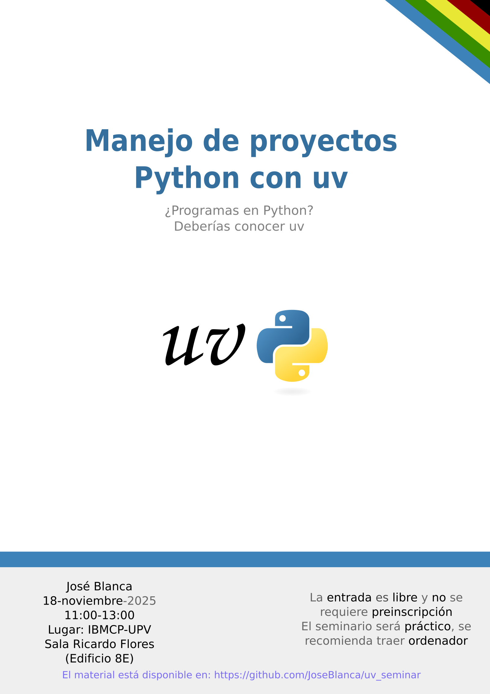

uv seminar

Today we will talk about uv, virtual environments, package dependencies, reproducibility and Python project management.
All the seminar materials can be found in its GitHub repository.
The seminar will be held in IBMCP at UPV at the Ricardo Flores room and is open for anybody interested in Python that is not yet familiar with uv.